Excluded Cosmetics
Cosmetics Index Exceptions
Competition and custom cosmetics are not included in the index, as these items are generally not available to all players.
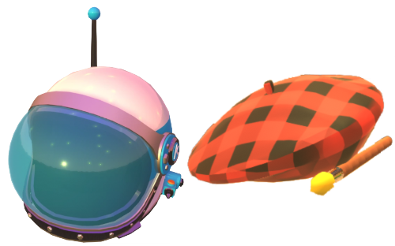
If you find value in this website and would like to support us, please consider using our ko-fi
Achievements List page.Steam Stats page to show various info.Unlocked in the Cosmetics Index.Achievements List and Steam Statspages.Release 1.4.0 expands what importing your Progression.zeepsave file will do:
All Cosmetics, Unlocked or Locked.Release 1.3.0 introduces automatically loading your Progression.zeepsave file which will do the following:
Load and SaveImport Zeepsave button which will read your current best times for the adventure map.Release 1.2.0 includes all the Zeepkist v18 features, including:
L Author Times video for L-01 to L-06L Collectables video for all gearsI Collectables video to include 10th Strange GiftRelease 1.1.0 introduces gift collection tracking, including:
You'll also find direct links to YouTube guides to help you collect gifts and complete author runs. In addition, the new Cosmetics Index page lets you browse, search, and sort every cosmetic item currently in the game - over 3500 items so far.
Competition and custom cosmetics are not included in the index, as these items are generally not available to all players.

Due to the way Zeepkist renders cosmetics as 3D objects using the same lighting conditions as the level environment, some items can be difficult to distinguish from one another. As a result, there may occasionally be cases where a cosmetic has been incorrectly identified.
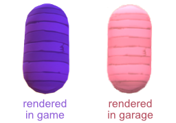
When you start, all the map pins should be set to a red cross icon, denoting an uncompleted level.
As of v1.5.0, using the website to manage your progress is the recommended approach. Manual editing remains available for players who prefer the old system.
With the Lock Map Clicks toggle in the hamburger menu set to true, you will not be able to edit these values manually. Instead, you should update them automatically using the Import Zeepsave button.
If this option is set to false, and you click on any map pin, you can cycle through all the various completion states: Uncompleted ➔ Bronze ➔ Silver ➔ Gold ➔ Author ➔ Uncompleted.
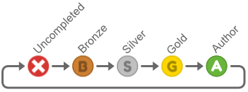
Each time you change the level's state, the map pin icon will move to the next state, and the popup card will change to reflect the current state (see Borders & Medal Times section below).
When you hover over a map pin, the popup card will appear. If you move your mouse pointer off the card and pin, the popup card will hide.
Additionally, to close the popup card, you can either click the X button on the top right of the card OR press the Shift key.
Holding down the Shift key is a simple way to prevent the popup card from appearing.
In the image below , you can see that the border of the popup card has changed to match the current status icon (Gold in this case).
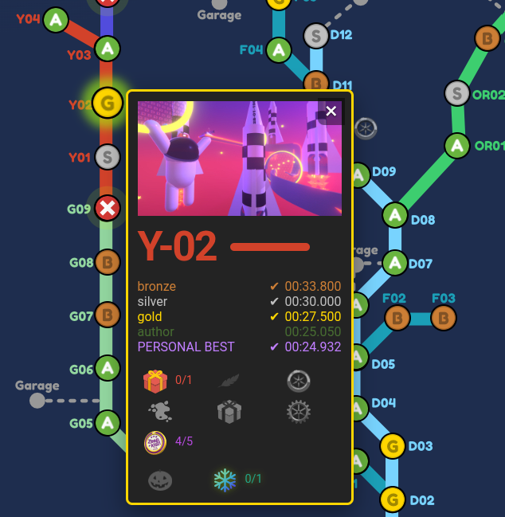
The completed medals will have a tick mark next to their times and will also be brighter to indicate that you have completed these medals. You can see in the image above, that because the Gold medal has been completed, bronze and silver are also checked and brighter. Only the green Author medal is dimmer and without a check mark.
When you cycle though the state of the level from Uncompleted ➔ Bronze ➔ Silver ➔ Gold ➔ Author ➔ Uncompleted, the medals counter will automatically adjust itself to show how many cosmetics items you have unlocked.
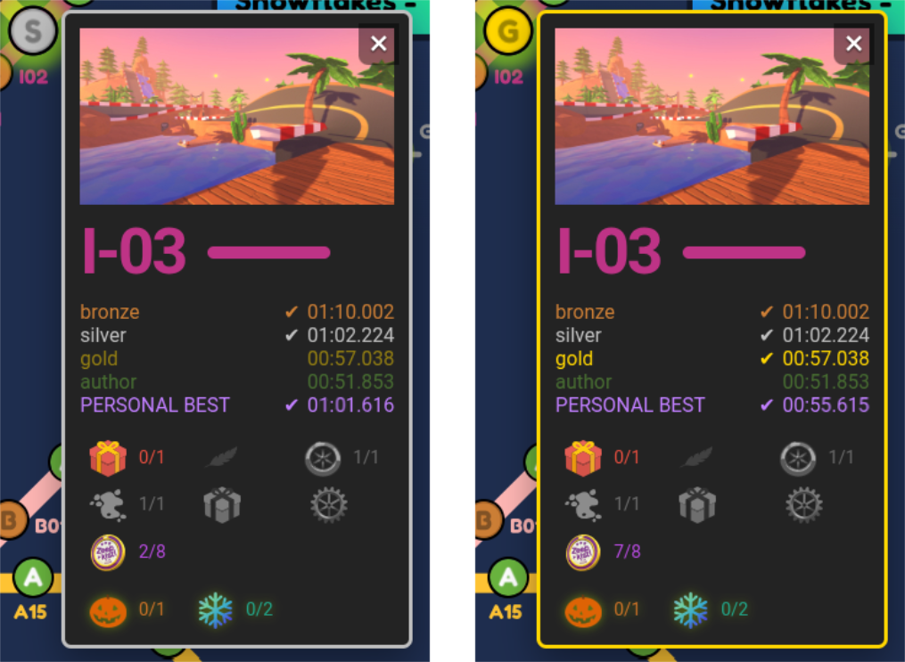
In the example above, for level I-03, you can see that the medal counter is set to 2/8 in the first screenshot as you recieve 1 gift for both bronze and silver.
However, in the second screenshot, where the player has now completed a gold medal time - the counter is now 7/8. This is because you unlock 5 cosmetic items if you complete the gold medal time on I-03.
And the final medal is of course for beating the Author medal time.
Hover over a level's screenshot in its popup card to reveal available YouTube links.
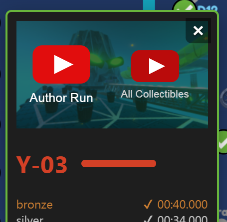
Clicking a video will open it in a popup window, where you can watch either an Author Run or a guide showing you how to find and collect All Collectables in the level.
During October and December, you may also see videos for All Pumpkins or All Snowflakes, respectively.
To close the popup window, click the X button in the top-right corner or simply click anywhere outside the popup.
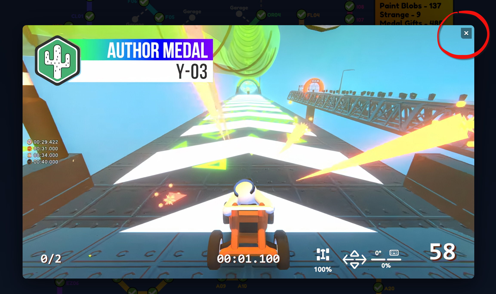
The level name and the horizontal line beside it (representing the track) always match the color of the track on the main map. For example, all Y (YouTuber) levels are shown in red and all OR (Off-Road) maps are a bright green.
This bottom section of the popup card shows all the collectables, starting with the six permanet ones red gift, blue feather, wheel, paint blob, strange and gear, then followed by the medals cosmetics for completing medal times (See Automatic Medal Gifts section above), and then the two seasonal collectables (pumpkins and snowflakes).
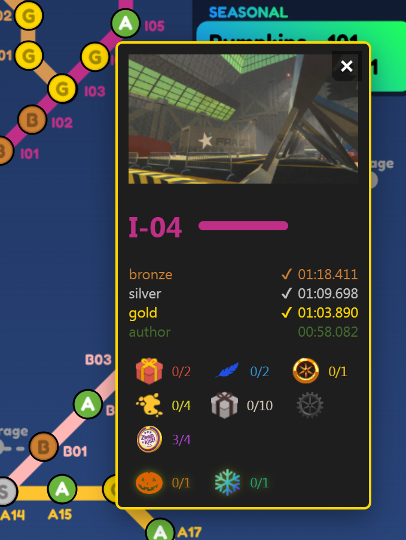
If a level has any collectables, they will be highlighted here and have text values for collected/total to their right.
Any collectables types not found in the level at all are dimmed, and have no text next to them.
As of Zeepkist v18, we now have an additional collectable type - Gears.
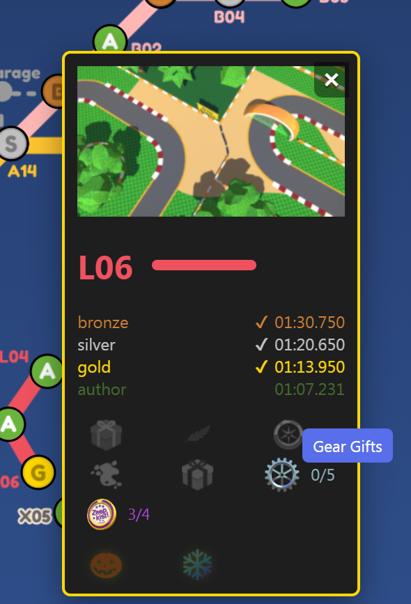
They will be displayed on all level pop-up cards, although at this point in time, all will be dimmed except for L-01 to L-06 as no other map has gear gifts.
In zeepkist you have many different collectables hidden around the adventure levels as well as 3 red gifts, 1 blue feather and 1 wheel in the overworld map itself.
I have seperated all of these into two types: permanent and seasonal.
If you have the Lock Map Clicks toggle in the hamburger menu set to true then all collectables are automatically set for you using the Import Zeepsave button.
As of v1.5.0, using the website to manage your progress is the recommended approach. Manual editing remains available for players who prefer the old system:-
For manual editing, set the Lock Map Clicks toggle to false.
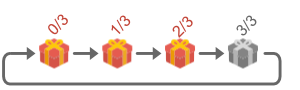
You can click on each highlighted icon to advance their collected value by one.
If a collected value equals the total i.e. 3/3 then both the icon and its text will become dimmed. If you click it a further time, they will both become highlighted again and the collected value will be reset to zero.
This way, you can easily tell whether you've collected all the gifts, as fully completed ones will appear dimmed.
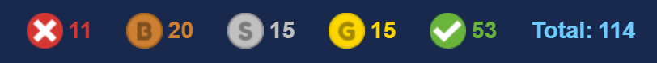
Counters show uncompleted levels and breakdown totals for Bronze, Silver, Gold, Author (grand total of 120).
In this example, you can see that the player has authored 58 levels, but still has 12 levels where they have not yet achieved at least a bronze rating.
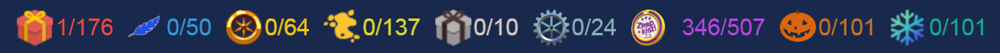
Here you can see each collectable icon with a collectred/total value.
Once all collectables of a particular type have been collected, their icon and text will be dimmed, making it easy to identify which collectables you still need to find.
Next is a total count for all gifts.
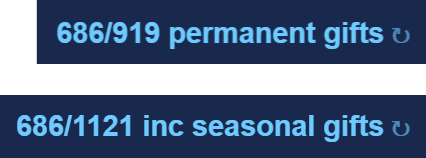
You can toggle betweeen including seasonal gifts or not, by clicking the text.
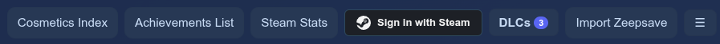
With the updated topbar in v1.5.0 some of the previous controls have been moved, whilst there are also some new controls added.
Some pages have different controls, but now all have the hamburger drop-down menu.
Depending on which page you are on you will see link buttons to the other pages (Read Me page link is always in the hamburger dropdown menu).
These buttons will redirect you to the other web pages.
Authenticate via Steam to display your achievements on the Achievements List page. By using this new feature for v1.5.0, you can also see various Zeepkist Steam stats on the new Steam Stats page.
Additionally, any associated cosmetics in the Cosmetics Index will be set to unlocked and will change them from highlighted in red (locked) to their normal unlocked style.
🔒 Only public Steam IDs and achievements are accessed. No personal data is stored.
🌐 For this to work properly, in Steam go to My Profile > Privacy Settings and make sure these are set accordingly:
Always keep my total playtime private... should be unchecked.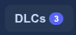
Use the DLC button badge counter and dropdown checkboxes to mark your owned DLCs (Early Access Testing, King's Day, Bobo Tires).
You have to set these manually as it is not possible to do this automatically through Sign in with Steam.
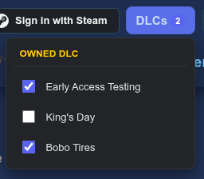
As of version 1.3.0, you now have a button called Import Zeepsave.
This button will allow you to open your Progression.zeepsave file which can normally be found in one of these folders:
Windows Folder
c:\Users\YOUR USER NAME\AppData\LocalLow\Steelpan Interactive\Zeepkist\Technical
Linux Folder
~/.local/share/Steam/steamapps/compatdata/1440670/pfx/drive_c/users/steamuser/AppData/LocalLow/Steelpan Interactive/Zeepkist/Technical
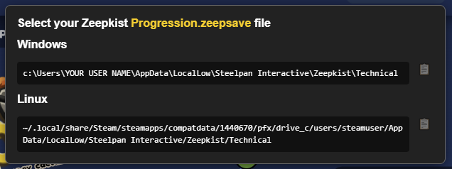
For convenience, use the clipboard button next to the Windows or Linux sections on the popup that appears when hovering over the Import Zeepsave button. Remember to change YOUR USER NAME to be correct for your Windows system.
It is recommended that before you use this import feature, you always save your current data by pressing the Save button in the drop-down Hamburger Menu - just in case there is a problem.
Once you import the zeepsave file, all your personal best times will be added to the level popup card.
Additionally, the map pins and collectable counters on the level popup card will be updated automatically.
As you can see in the image bellow, the personal best time is in purple, directly underneath the medal times. And as the personal best is between silver and gold times - only the bronze and silver times have been completed.
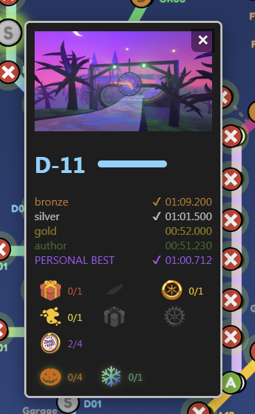
Your medal times will automatically reflect your best time - i.e. you improve your best silver medal time and you now have a gold medal beating time.
The Adventure Map pins will also automatically change to reflect which is the best medal you have for that level.
If you want to update all the times, pins and unlocked cosmetics, you just have to re-import the Progression.zeepsave file and this will overwrite the old times and cosmetics counts. Note: Manually edited pin values override imported values until reset or changed.
Please be aware that your old save backup will still have the old times and counts - so it would be a good time to save a new backup file.
If you are not following the recommended approach of only using the Import Zeepfile button to update your data, and are mixing import and manual edits, then please take note of these:-
TLDR: just use the Import Zeepfile instead of manual edits :D
Whilst the map automatically scales to fit your window width, please note that the map pins may appear slightly misaligned by a few pixels.
For the best experience, I recommend viewing the map at the largest size possible on your PC - ideally at a width of 1300px or greater.
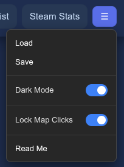
I recommend exporting a backup of your data to a locally saved JSON file using the Save button in the hamburger drop-down menu.
This allows you to Load the data back into the same browser - or into a different browser or device if needed.
Please note that any changes made after saving will not automatically sync between browsers or devices.
You are also free to create and keep multiple save files if you wish - how you manage them is entirely up to you.
Your data is stored locally in your browser using localStorage, which means it does not sync across different browsers or devices.
Before v1.3.0 - if you cleared your browser data or switched to another device or browser without a save file, your progress may have been unavailable or permanently lost.
Now, it is very quick to re-create your previous state by using these three features:
It is even quicker if you create a save file as this effectively reloads all three of those things at once - but it is now not a terrible thing if you do not.
Select your preferred light or dark theme (dark is default) - this is now implemented site wide.
Lock Map Clicks is used to change the way you interact with the main Adventure Map page.
If this option is set to true, you will not be able to edit the map pins states manually - this is now the recommended approach.
Instead, you should update them automatically using the Import Zeepsave button.
This applies to both manually editing map pins and managing collectible items in level popup cards. Additionally, the level popup card will self hide when your mouse pointer is not on the map pin or popup card.
Manual editing remains available for players who prefer the old system, simply set this to false.
If you are reading this page, then you have most likely already found the Read Me button in the hamburger drop-down menu.
This page allows you to easily browse, search, and sort nearly all of the 3,500+ cosmetics that are in the game.
These cosmetics are unlocked via Adventure Map collectables, medal times, achievements, DLC and you also get some free ones when you purchase Zeepkist.
The only items that are not in the index, are any competition or custom cosmetics, as these are not available to every player.
The top menu bar displays the number of currently viewable cosmetics alongside the total available. In the example above, all cosmetics are visible as no filters have been used, so the text is therefore shown as 3599/3599.
You can also use one or more of the dropdown menus to filter your results by color, level, cosmetic type, unlocked status or use the text search box for a broader search based on item criteria.
So for example, you can use the color dropdown and select Blue to find all items with some blue in them. In this example you get a result of 475 blue cosmetics.
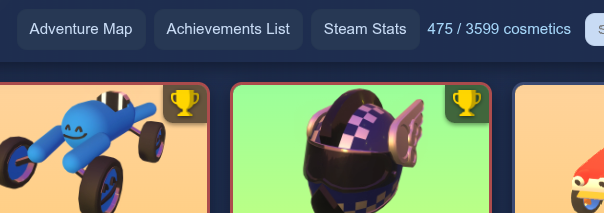
You could then filter this large result further by choosing to also only show hats from the cosmetic types dropdown. This reduces the result to 49 blue hats.
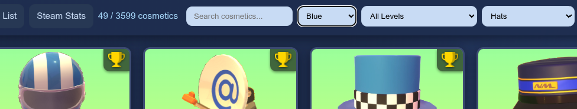
Next you could filter it even more by adding a search box filter for plaid. The result would be a list of 5 blue plaid hats as shown below.
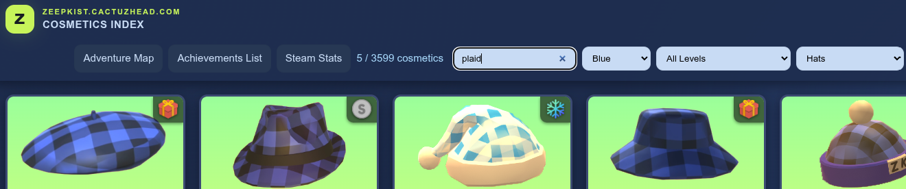
By using various combinations you can easily filter your results to find a specific cosmetic.
For example you could search for green in the text box as well as using the color dropdown to select red, and then also only search for paragliders.
In this example your result would show 3 paragliders which feature green and red in them (example below).
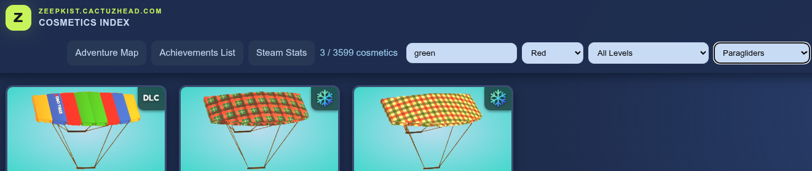
You can additionally sort the results by name, level or location order in the garage, all in ascending or descending order.
This can be used alone or in combination with the other filters.
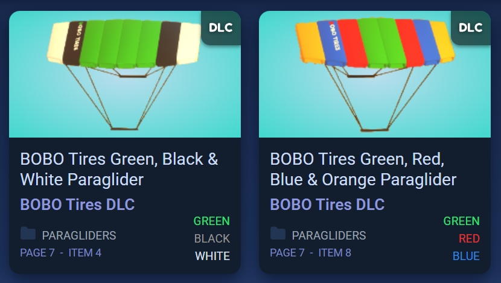
Each cosmetic item will be displayed in a card with a lot of usefull information described in greater detail below.
In this top section you will see a thumbnail of the cosmetic item.
For each type of cosmetic, the background color will be different. For example, all hats will have a green background, whilst every paraglider has a blue background.
In the top right of every thumbnail is a small icon denoting how this particular cosmetic is unlocked.
So you may see one of the following icons.
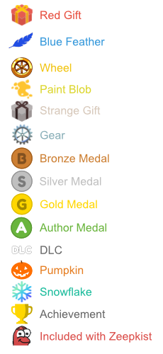
Note that the Yannic smile icon is for included free cosmetic items that are already unlocked for you when you first play the game.
Some cosmetic items will display a YouTube video link when you hover over their thumbnail.
Clicking the link will open a popup window containing a video guide that shows you how to obtain that specific cosmetic item.
This may link directly to the relevant timestamp in the level's All Collectables video or, for items unlocked by achieving a specific medal time, to the corresponding Author Run video.
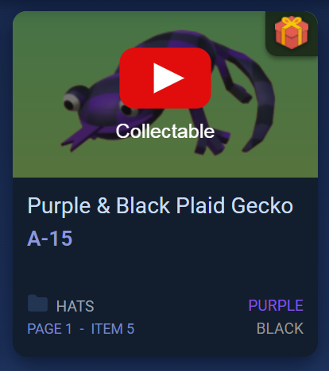
If it is a collectable gift, then you will be shown where it is located and how to obtain it.
In the case of a cosmetic that is unlocked by completing a level in a medal time, you will instead be linked to an Author Run video.
Note that the video only shows you my sucessful author run which may include skips or shortcuts. For some lower medals (bronze, silver, gold) you may prefer to take a slightly easier route to safely get them if you don't think you can get the author medal at this point in time.
DLC cosmetics do not have any associated YouTube videos as these are obtained by buying DLC from Steam (Early Access Testing DLC is free).
And finally, achievement cosmetics are obtained by completeing Steam challenges.
Note that some achievements might have a different icon type in the top right of the thumbnail as they are obtained by doing something involving another icon. For example the 1 Author Medal Achievement will show a medal icon instead of an achievement icon.
All others will have my standard trophy achievement icon.
However, all cosmetics which are Steam achievments will have their level vairable set to Achievement regardless of the displayed icon.
Therefore you can use the level dropdown filter to choose Achievement to view all cosmetics obtained by completing a Steam challenge.
Underneath the thumbnail section you will first find the description of the item.
Next, is the level number - although in some special cases it will show one of the following instead:-
Just below this is the cosmetic type folder in the garage where the cosmetic can be found. These are either Zeepkists, Hats, Glasses, Wheels, Character, Paragliders or Horns.
The page and item number is at the bottom, so that you can find it more easily in the garage.
The Page and Item numbers are based on having all of the readily available cosmetics unlocked.
Sometimes these item numbers may be slightly off as the folders will only show the cosmetics you have unlocked, so the item you want may be further to the left in the list.
Also, I have not included any competiton or custom cosmetics in the index as these items are not generally available to everyone. Therefore, you may find that if you own one of these, it may also displace the location numbers slightly.
So for example, if you want to find the green & black plaid shiny character, look in character -> whole character -> shiny plaid colors -> page 2 -> item 2
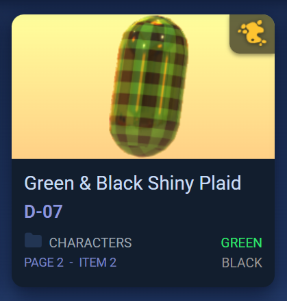
In the bottom right of each card is up to three colors that are featured in the cosmetic item.
There may be additional colors, but these are the most predominant colors.
Note that to keep the total number of colors to a minimum, and to make it easier to catagorise and find items, I chose these 15 colors to describe all cosmetics.
Seasonal videos will only be available in either October or December for the Pumpkin and Snowflake collectables.
They should automatically be seen when hovering over the thumbnail when they are actually collectable to help prevent clutter and confusion for the rest of the year.
All YouTube videos are always available at https://www.youtube.com/cactuzhead at any time of the year - if you really want to see them.
Note, I have not currently created the Snowflakes.
I only started this project in January 2026 and so missed the chance to record these collectables with my 2nd Steam account (I had already completed them all in my main account), but I will endeavor to collect them all and update this website in October and December 2026 as soon as I can record, edit, publish the videos and update the websites json data.
[UPDATE] - The pumpkins video was added 2nd October 2026 - and is available as timestamped links when you hover over each levels thumbnail on the Adventure Map page.
I will post in the Zeepkist discord when they have been added.
If you use the Import Zeepsave button (found on the adventure map page), it will grab all your unlocked cosmetics and update them in your Cosmetics Index automatically.
All Locked cosmetics will be highlighted in red in the Cosmetics Index page, whilst unlocked ones will appear normal.

You can also now filter your results using the new filter dropdown with All Cosmetics, Unlocked or Locked dropdown as options. And remember that you can use multiple filters to narrow down your search.

This page allows you to view your unlocked and locked Steam achievements if you use the Sign in with Steam button on the main Adventure Map page.
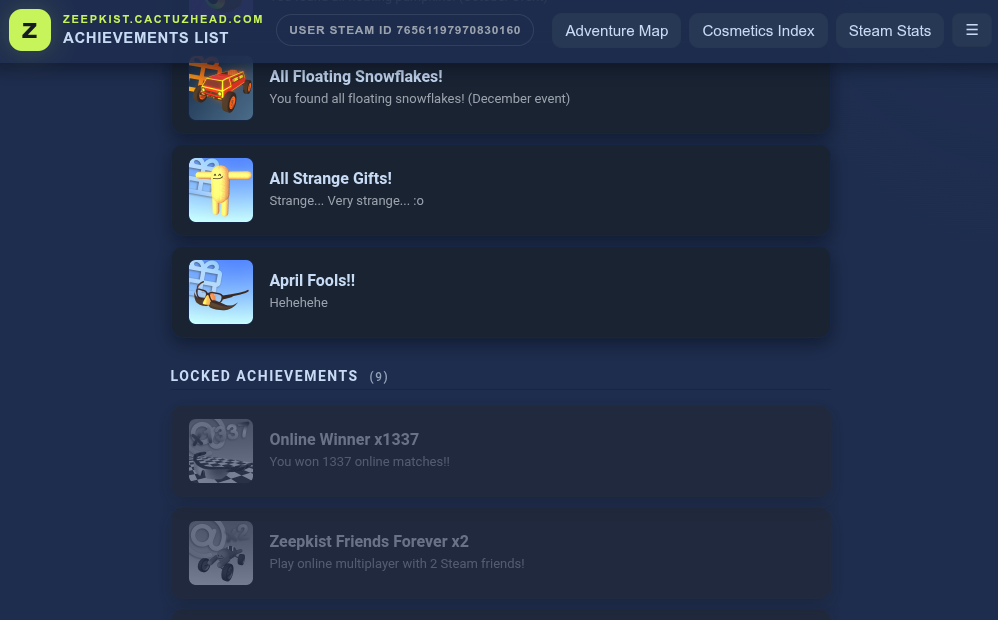
🔒 Only public Steam IDs and achievements are accessed. No personal data is stored.
🌐 For this to work properly, in Steam go to My Profile > Privacy Settings and make sure these are set accordingly:
Always keep my total playtime private... should be unchecked.If you Sign in with Steam your Steam ID number will be displayed on the left side of the topbar.
If you use the Sign in with Steam button on the main Adventure Map page, the Steam Stats page will provide a detailed overview of your Zeepkist playtime, using statistics reported by Steam.
Together, the panels on this page, provides a comprehensive snapshot of your Zeepkist history, showing not only how long you have played, but also your recent activity, preferred platform and the additional statistics available through Steam.
🔒 Only public Steam IDs and achievements are accessed. No personal data is stored.
🌐 For this to work properly, in Steam go to My Profile > Privacy Settings and make sure these are set accordingly:
Always keep my total playtime private... should be unchecked.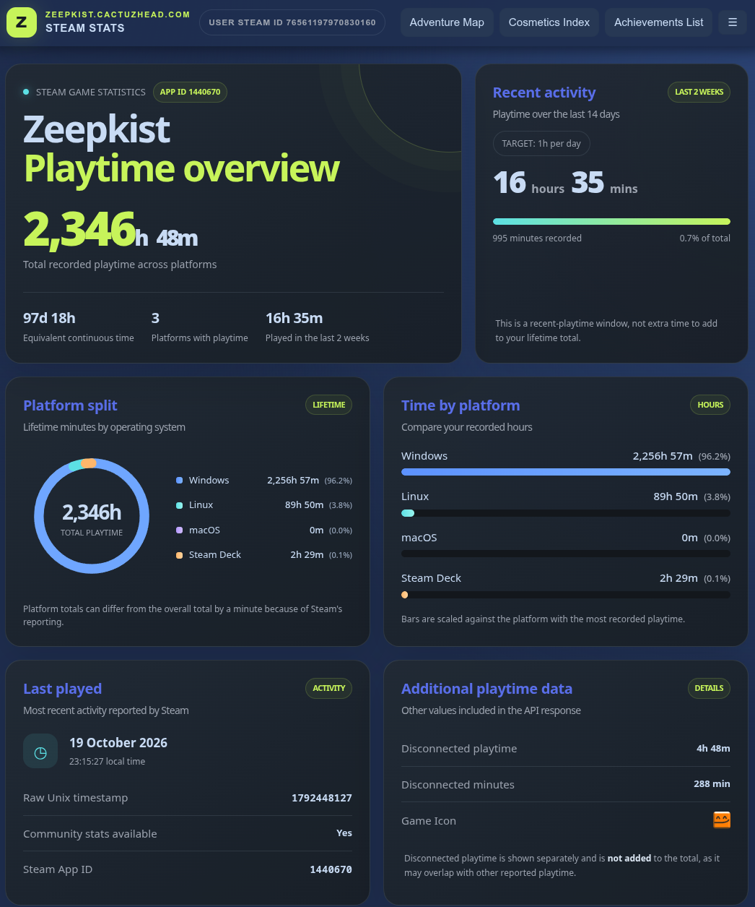
If you Sign in with Steam your Steam ID number will be displayed on the left side of the topbar.
Displays your total recorded Zeepkist playtime across all platforms, including the equivalent time in days and hours. It also shows how many platforms have recorded playtime and how much time you have spent playing during the last two weeks.
Shows your recorded playtime over the last 14 days, including the total hours and minutes played. A progress bar compares this activity against a target of one hour per day, with the recorded minutes and percentage of lifetime playtime displayed for context.
Provides a breakdown of your lifetime playtime by operating system or platform: Windows, Linux, macOS and Steam Deck. A doughnut chart visualises each platform's share of the total, alongside the recorded time and percentage for each. Small differences between platform totals and the overall total may occur due to Steam's reporting.
Displays the same platform statistics in a horizontal bar chart, making it easy to compare how much time you have spent on each platform. The bars are scaled relative to the platform with the highest recorded playtime, helping highlight your preferred gaming platform.
Shows the most recent activity timestamp reported by Steam, converted into a readable date and local time. It also indicates whether Community Stats are available for Zeepkist and displays its Steam App ID.
Displays supplementary information returned by Steam, including disconnected playtime, disconnected minutes and the game's icon. Disconnected playtime is shown separately and is not added to the lifetime total, as it may overlap with time already recorded elsewhere.